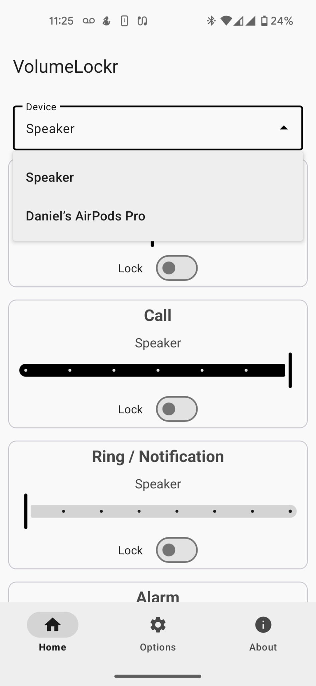
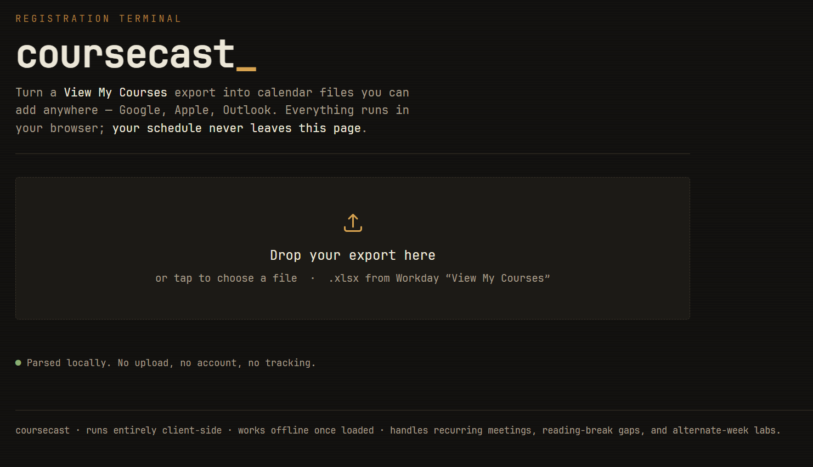
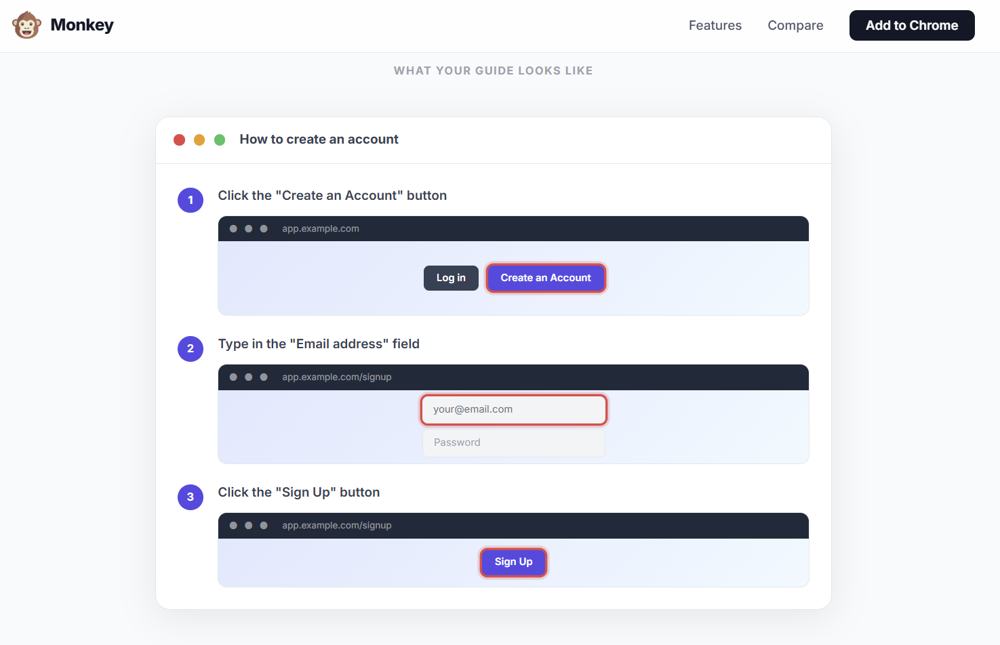

Miscellaneous Utilities
A grab bag of smaller tools, built to solve small problems along the way.
Project Summary
- A living directory of eight utilities.
- Projects spanning React, Next.js, Kotlin, PHP, JavaScript, Python, and AutoLISP.
- Turned recurring personal, school, shop, and drafting annoyances into narrowly scoped tools.
- Built apps, scripts, calendar feeds, and automations around each problem.
- Delivered tools for degree planning, inventory, per-device audio, and Notion tasks.
- Also covered CAD drafting, timetable export, and automatic guide creation.
About This Page
A lot of things I build are to fix one specific annoyance. This page is a home for those things: small programs, scripts, automations, and utilities that solved a real problem without needing to become a "project" in the fuller sense of the other pages here.
UBC MECH Degree Planner
A full-stack planning tool for navigating UBC's Mechanical Engineering degree, with course data collected from the UBC calendar and historical grade distributions supplied through a ubcgrades.com API proxy.
Shop Inventory System (WIP)
An inventory app for the team shop with an interactive 3D bay map, barcode scanning, respirator expiration tracking, and crate manifests, built to replace a spreadsheet that was difficult to keep current.
VolumeLockr2
A fork of the VolumeLockr Android app with added per-device volume control support which lets you set and lock volume levels independently for each connected audio device (Bluetooth speakers, headphones, wired output) instead of one global slider.
↗ github.com/danielrbenjamin/VolumeLockr2
notion2ical
A small PHP script that streams a Notion database's date-bearing items and pages into iCalendar format, so any calendar app can subscribe to a Notion database as a live feed.
↗ github.com/danielrbenjamin/notion2icalNotion Tasks Rainmeter Skin
A desktop Rainmeter skin that pulls tasks straight from a Notion database onto the desktop, so what's due is visible at a glance without opening Notion just to check.

AutoLISP Automation Scripts
A collection of AutoLISP scripts written during a mechanical co-op at Avalon Mechanical to cut down repetitive AutoCAD drafting work such as cleaning drawings, project setup, and more. The scripts are Avalon Mechanical–specific and are not public.
workday-to-ics
A customizable exporter that turns a UBC Workday course-export spreadsheet into an iCal feed, with comparison features for lining a schedule up against friends' timetables. Runs entirely client-side.
↗ danielrbenjamin.github.io/workday-to-ics
Monkey
Monkey see, monkey do — record your workflow once and Monkey turns it into a polished step-by-step guide, with every click and keystroke captured and assembled into screenshots and annotations automatically. Built as a free and local Tango alternative.
↗ danielrbenjamin.github.io/monkey